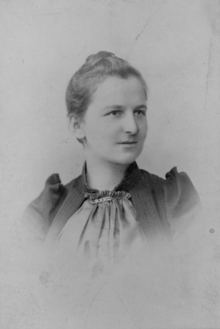
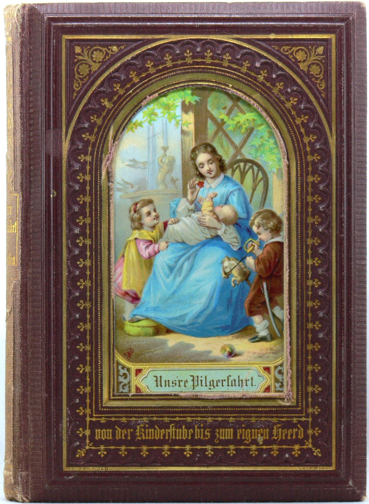
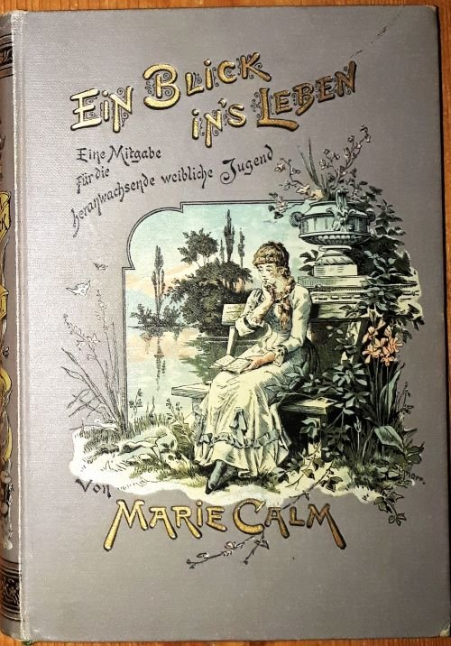

10. Frauen in der Kaiserzeit (30')
Die Frauenfrage

Wir leben in einer 'Männerwelt', vom Mann in erster Linie für sich, nach seinem Bilde, für sein Behagen geschaffen. In dieser Welt hat der Mann sich als Massstab aller Dinge und Wesen betrachtet, auch als Massstab der Frau.
- Käthe Schirmacher, Frauenrechtlerin, 1905
Das Zitat der deutschen Frauenrechtlerin und Politikerin Käthe Schirmacher schildert die Position des Mannes in der Gesellschaft im Kaiserreich, in der Frauen scheinbar immer nur eine Nebenrolle spielten und der Mann die Norm darstellte. Mit «Frauenfrage» ist die Debatte über die Bedeutung der Frauen innerhalb der Gesellschaft und der Kampf um die Gleichberechtigung von Frau und Mann gemeint. Diese wurde seit der Aufklärung heftig geführt.
Deutschland kam mit der «Ersten Frauenbewegung» eine Vorreiterrolle zu. Sowohl bürgerliche Frauen als auch Arbeiterinnen forderten Rechte, von denen sie bis anhin sehr wenige hatten. Eine politische Teilhabe war rechtlich unmöglich. Durch die Gründung von Vereinen und Verbänden verschafften sich die Frauen Gehör. Da sich die Lebenswelten der bürgerlichen und proletarischen Frauen massiv unterschieden, zielten auch die Forderungen der bürgerliche Frauenbewegung und der Arbeiterinnenbewegung in verschiedene Richtungen.
Wahre Geschichten
Klicken Sie sich durch die Aussagen. Welcher Sachverhalt überrascht Sie am meisten?
Frauen zwischen Erwerbsarbeit und Familie
Erwerbstätige Frauen gehörten zum Alltag um 1900. Für verheiratete bürgerliche Frauen war dies keine Option. Allerdings blieb auch unverheirateten bürgerlichen Frauen die Erwerbsarbeit sehr schwer zugänglich.
Arbeitsalltag
Während die Mutter Knallbonbons fertigt, müssen die beiden Kinder helfen. Sie arbeiten im Wohn- und Schlafraum einer Wohnung im Osten Berlins um 1910. Die Raummasse sind 4m x 2,75m.
Kinderarbeit war weit verbreitet. Trotz Bestrebungen seit dem Ende des 19. Jahrhunderts, Kinderarbeit einzuschränken, arbeitete in Deutschland noch 1900 eine halbe Million Kinder.
Fotografie ©picture-alliance, ZB
Erwerbsarbeit
Die Erwerbstätigkeit von Frauen stieg zwischen 1882 und 1907 von 18,5 auf 26,4%. Als «Aus guter Familie» veröffentlicht wurde, ging also über ein Viertel aller Frauen einer bezahlten Erwerbstätigkeit nach. Dieser Anteil stieg stetig an. Arbeitende Frauen waren also absolut keine Ausnahme. Für die erwerbstätigen Frauen stellte sich eine Doppelbelastung ein: Erwerbsarbeit sowie familiäre Pflichten.
Für grossbürgerliche Frauen war eine Erwerbsarbeit aber eine grosse Seltenheit. Nur in der Vermittlung (Lehrerin), in der Kirche (Diakonissin) oder - langsam und erschwert - in Wissenschaft und Kunst boten sich Frauen aus gehobenen Familien mögliche Auskommen.
Ehe- und Kinderlosigkeit
Die Ehelosigkeit war insbesondere für Frauen ein Problem, weil eine finanzielle Unabhängigkeit durch Erwerbsarbeit nur unter erschwerten Bedingungen möglich war. Für die gleiche Arbeit erhielten Frauen - z.B. in Fabriken - deutlich weniger Lohn.
Gerade für bürgerliche Frauen waren Alternativen zum Leben mit einem Ehemann (und Kindern) begrenzt und eigentlich nicht vorgesehen.
Die «Mädchenfrage»
«Aus guter Familie» trägt den Untertitel «Leidensgeschichte eines Mädchens». Mit Mädchen ist hier kein weibliches Kind gemeint, sondern eine unverheiratete Frau. Die so genannte Mädchenfrage wird von einigen Forschungen gegen Ende des 19. Jahrhunderts in Deutschland diagnostiziert, da sich ein statistischer Frauenüberschuss einstellte. Zeitgenössische Beobachter konstatierten um 1900, dass die Ehelosigkeit zu einer Massenerscheinung geworden war. Dies stellte die Gesellschaft vor ein unvorhergesehenes Problem.
«Es sind immer so viel mehr Damen als Herren da.» (AgF, S. 67)
Rechtliche Fortschritte?
Aufgrund der prekären Bedingungen in Fabriken mit Arbeitszeiten bis zu 14 Stunden, Sonntagsarbeit und gesundheitsschädigendem Arbeitsumfeld forderte die Arbeiterbewegung im Deutschen Kaiserreich Sozialgesetze. Diese fokussierten allerdings hauptsächlich auf die männliche Arbeiterschaft. Frauen sollten nicht als Erwerbstätige, nicht als Arbeiterinnen Schutz vor den gesundheitlichen und moralischen Risiken der industriellen Arbeitswelt geniessen. Vielmehr sollten ihnen die Funktionen als Mutter, in Erziehung und Haushaltsführung ermöglicht werden.
Mann als Alleinverdiener?
Nahezu ungebrochen herrschte die Idealvorstellung vor: der Mann als Alleinverdiener auf der einen Seite, die Frau als Ehefrau und Mutter auf der anderen. Die Zahlen zur Erwerbstätigkeit (vgl. Step 2) und die vielen Unverheirateten (vgl. Step 3 und Step 4) zeigen aber, dass dieses Ideal nicht der Realität entsprach.
Zum Umdrehen anklicken.
Welche Aussagen treffen zu?
«So wie das Leben dieser Agathe Heidling verläuft der Erdengang Tausender von Töchtern ‹guter Familien›, die in der grossen Classenlotterie des Heirathsmarktes eine Niete gezogen und den einzig rettenden Versorger trotz der tadellosen Erziehung nicht gefunden haben. »
- Josef Ettlinger (AgF, S. 349)
Die Mädchenfrage
Friedrich Girardet. Das Brautgeschenk oder Briefe einer Mutter an ihre Tochter über die Bestimmung des Weibes als Hausfrau, Gattin und Mutter, 1819.

Elise Polko. Unsre Pilgerfahrt von der Kinderstube bis zum eignen Herd, 1877.

Marie Calm. Ein Blick ins Leben. Mitgabe für die heranwachsende weibliche Jugend, 1892.
August Bebel sorgte mit seiner weit verbreiteten Schrift «Die Frau und der Sozialismus» (1. Auflage 1881 unter dem Titel «Die Frau in Vergangenheit, Gegenwart und Zukunft ») für die Bekanntmachung einer Statistik über die abnehmenden Eheschliessungen. Die Hauptursache des Frauenüberschusses in den europäischen Industrienationen begründete er vorwiegend mit der höheren männlichen Sterblichkeitsrate und der Auswanderungswelle. Die Ursache der Heiratsunlust der Männer sah Bebel in der Gewöhnung an Luxus der Töchter, in den langen Ausbildungszeiten der Männer und dem einfachen Zugang zur Prostitution. (Vgl. Mellmann 2008, S. 8f.)
Den Frauen wurde deshalb geraten, weil die Ehen immer seltener wurden, auch Berufe und Ausbildungen in Angriff zu nehmen, falls die gewünschte Hochzeit ausbleibt. In einem Essay verweist der Rechtswissenschaftler Eugen Ehrlich auf dieses Phänomen und stellt die Frage, weshalb die Mädchen noch zur Ehe erzogen werden, wenn sie nicht heiraten können. (Vgl. Mellmann 2006, S. 413f.)
Auch Agathe ist nicht bloss eine unverheiratete Frau, sondern eine unverheiratete Frau wider Willens. Dieser «Frauenüberschuss» und die Situation, in der sich die Frau befindet, die heiraten will, aber nicht kann, auch wenn sie alles richtig macht, ist das eigentliche Thema dieses Romans. Reuter wendet sich nicht gegen die Ehe, nicht gegen das Weiblichkeitsideal, in erster Linie, sondern gegen eine Erziehung, die ins Leere läuft. (Vgl. Mellmann 2008, S. 4)
Die Rezensentin Margarete Lisco schreibt 1896 in der Nationalzeitung über den Roman «Aus guter Familie» :
Kein einziges der Schlagworte moderner Frauenbewegung, Berufswahl, politische Gleichstellung der Geschlechter, Erwerbsthätigkeit der Frau, klingt in dem Buch wieder. Agathe ahnt von alledem nichts, ihre Wünsche halten sich durchaus in dem Rahmen des Erreichbaren und Massvollen: ein stilles Glück in Mann und Kindern, ein Wirkungskreis, in dem sie Anerkennung und Befriedigung finden kann, ist das Begehren ihres Herzens. (Mellmann, 2006, S. 396)
Der Roman weckt mit den Schlagwörtern «Aus guter Familie» und «Mädchen» Erwartungen, die dieses Problemfeld öffnet und damit ein zeitgebundenes Phanömen betrachtet. Interessierte Leser:innen waren deshalb Frauen und Männer aus der höheren Mittelschicht, insbesondere Väter. (Mellmann 2008, S. 14)
Noch Jahre später, so erzählt Reuter in ihrer Autobiografie, hätten ihr
Männer: Väter und Brüder der Opfer, häufig genug gesagt, dass ihnen erst durch mein Buch gleichsam ein Vorhang zerrissen sei und ihre Einstellung zu den jungen und den alternden Mädchen ihrer Familie eine völlige Umwälzung erfahren habe. (Mellmann, 2006, S. 600)
Der Roman «Aus guter Familie» trifft den Nerv der Zeit, da die Ehelosigkeit ein zeitgebundenes Massenphänomen darstellt, das Reuter ungeschönt darstellt.
Diskussion
Arbeiten Sie zu zweit. Erklären Sie die unten aufgeführten Begriffe. Bringen Sie diese auch mit «Aus guter Familie» in Zusammenhang.
Zum Umdrehen anklicken.
Reflexion
Bearbeiten Sie die Fragen und halten Sie Ihre Antworten im Lesejournal fest.